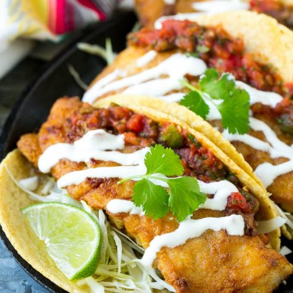
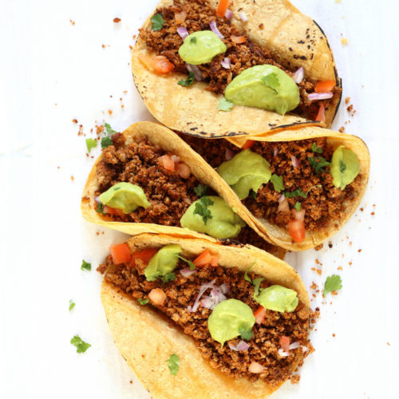
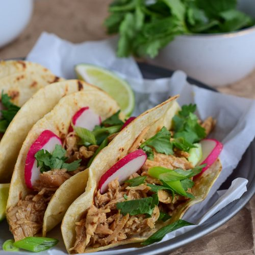

The origins of the taco are not precisely known, and etymologies for the culinary usage of the word are generally theoretical.[1] According to the Real Academia Española, publisher of Diccionario de la Lengua Española, the word taco describes a typical Mexican dish of a maize tortilla folded around food.[2] This meaning of the Spanish word "taco" is a Mexican innovation, but in other dialects "taco" is used to mean "wedge; wad, plug; billiard cue; blowpipe; ramrod; short, stocky person; [or] short, thick piece of wood." In this non-culinary usage, the word "taco" has cognates in other European languages, including the French word "tache" and the English word "tack (nail).
"Tacos de pescado ("fish tacos") originated in Baja California in Mexico, where they consist of grilled or fried fish, lettuce or cabbage, pico de gallo, and a sour cream or citrus/mayonnaise sauce, all placed on top of a corn or flour tortilla. In the United States, they were first popularized by the Rubio's fast-food chain, and remain most popular in California, Colorado, and Washington. In California, they are often found at street vendors, and a regional variation is to serve them with cabbage and coleslaw dressing on top.
Click here to hide fish tacos again.
The name says it all—with pantry-staple spices and super-customizable toppings, these vegetable-centric tacos take all of 15 minutes to put together, providing reassurance that taco night can happen even on the busiest evenings.
Click here to hide veggie tacos again.
("spit" or "grill" tacos) may be composed of any of the following: carne asada tacos; tacos de tripita ("tripe tacos"), grilled until crisp; and, chorizo asado (traditional Spanish-style sausage). Each type is served on two overlapped small tortillas and sometimes garnished with guacamole, salsa, onions, and cilantro (coriander). Also, prepared on the grill is a sandwiched taco called mulita ("little mule") made with meat served between two tortillas and garnished with Oaxaca style cheese. "Mulita" is used to describe these types of sandwiched tacos in the Northern States of Mexico while they are known as Gringa in the Mexican south and are prepared using wheat flour tortillas. Tacos may also be served with salsa.
Click here to hide chicken tacos again.
